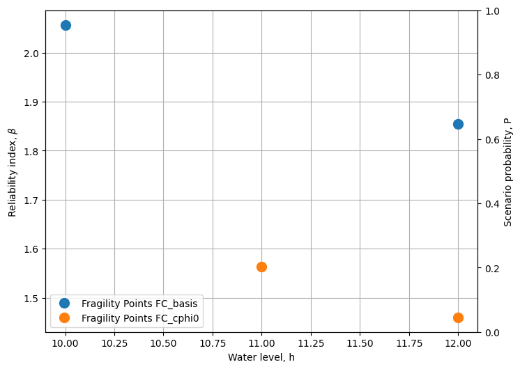
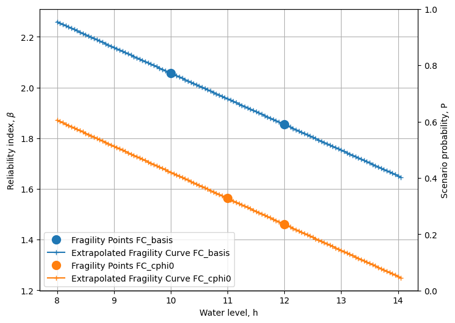

Tutorial 4: Combining 2 fragility curves for different scenario’s.¶
We consider the slope reliability with a relatively thin blanket layer.
In the base case, the blanket layer has a strength, but in case of uplift the strength reduces (to 0). For the latter, a scenario is calculated with c/ph=0 in the uplift zone.
The water level at which uplift happens is uncertain. At low water levels, the probability of uplift (and strength reduction) is rather low, whereas at high water levels, the probability of uplift is high (and thus the c/phi=0 scenario).
Import necessary python packages¶
import json # for reading fragility curves in D-Stability .json format
import numpy as np # for array calculations
import scipy.stats as st # for statisitcal functions
import pandas as pd # for reading excel files
from scipy.interpolate import interp1d # for linear inter- and extrapolation outside the range
import matplotlib.pyplot as plt # for plotting
Load base class for Fragility curve operations¶
# A class for importing DStability Fragility curves
class DStabilityFragilityCurve:
# A static method in a class can be used without the the class-data.
# This method densifies and extrapolates a fragility curve
@staticmethod
def densify_extrapolate(x, y, xrange, xdelta, fill_value='extrapolate'):
xnew = np.arange(xrange[0], xrange[1] + xdelta, xdelta)
f = interp1d(x, y, kind='linear', bounds_error=False, fill_value=fill_value)
ynew = f(xnew)
return xnew, ynew
def __init__(self, label, filename):
'''
- stores the given label
- loads the json as raw data
- initiates the preprocess_rawdata() method
'''
self.Label = label
with open(filename, 'r') as f:
self.rawdata = json.load(f)
self.preprocess_rawdata()
def preprocess_rawdata(self):
'''
- preprocesses the raw data into a structure
'''
self.FragilityPoints = self.rawdata.get('Calculations')
self.Stochasts = self.rawdata.get('Stochasts')
self.Correlations = self.rawdata.get('Correlations')
self.h = [point.get('WaterLevel') for point in self.FragilityPoints]
self.b = [point.get('Beta') for point in self.FragilityPoints]
# Make dictionary for translating Stochast Id to Label
self.stochasts = {}
for stochast in self.Stochasts:
if stochast.get('ParameterType') == 'ModelFactor':
self.stochasts.update({stochast.get('Id'): stochast.get('ParameterType')})
else:
self.stochasts.update({stochast.get('Id'): stochast.get('ParameterType') +
'.' + stochast.get('Label')})
for fragilitypoint in self.FragilityPoints:
for contribution in fragilitypoint.get('Contributions'):
contribution.update({'Name': self.stochasts.get(contribution.get('Stochast'))})
# cleanup for alpha values
self.alphas = {}
drop_list = [correlation_item.get('Stochast2') for correlation_item in self.Correlations]
for unique_stochast_name in set([val for key, val in self.stochasts.items()]):
alphas = [contribution['Alpha'] for point in self.FragilityPoints
for contribution in point.get('Contributions')
if (self.stochasts[contribution.get('Stochast')] == unique_stochast_name
and contribution.get('Stochast') not in drop_list ) ]
self.alphas.update({unique_stochast_name: alphas})
# final cleanup
self.alphas = {key: val for key, val in self.alphas.items() if val}
def get_scenario_probability(self, file):
'''
Import the scenario probabliity (weights) from excel file.
Note the column headers match the labels of the fragility curve
in the format P({self.Label})
'''
scenario_probability_data = pd.read_excel(file)
self.scenario_h = np.array(scenario_probability_data['h'], dtype=float)
self.scenario_p = np.array(scenario_probability_data[f'P({self.Label})'], dtype=float)
def set_extrapolation_range_and_density(self, range_h, delta_h ):
self.range_h = range_h
self.delta_h = delta_h
def densify_extrapolate_fc(self):
# For the beta's
self.H, self.B = DStabilityFragilityCurve.densify_extrapolate(self.h,
self.b,
self.range_h,
self.delta_h)
# For the alpha's
self.Alphas={}
for unique_stochast_name, alphas in self.alphas.items():
H, Alphas = DStabilityFragilityCurve.densify_extrapolate(self.h,
alphas,
self.range_h,
self.delta_h)
self.alphas.update({unique_stochast_name: alphas})
self.Alphas.update({unique_stochast_name: Alphas})
def densify_extrapolate_scenario_probability(self, logarithmic=True):
if logarithmic:
self.scenario_p[self.scenario_p<(1e-9)] = 1e-9
self.scenario_p[self.scenario_p>(1-1e-9)] = 1-1e-9
self.H, self.P = DStabilityFragilityCurve.densify_extrapolate(self.scenario_h,
np.log10(self.scenario_p),
self.range_h,
self.delta_h)
self.P = pd.Series(10.**self.P).bfill().ffill().to_numpy()
else:
self.H, self.P = DStabilityFragilityCurve.densify_extrapolate(self.scenario_h,
self.scenario_p,
self.range_h,
self.delta_h)
Code for plotting¶
def plot_fragility_curves(FC_list, figures_to_plot):
# Instantiate a figure with a specified size
fig = plt.figure(figsize=(8, 6))
ax = fig.add_subplot(1, 1, 1)
ax2 = ax.twinx()
# Set the axis labels and title
ax.set_xlabel('Water level, h')
ax.set_ylabel(r'Reliability index, $\beta$')
ax2.set_ylabel(r'Scenario probability, P')
def plot_fragility_points(fig, h, b, label, color):
# Add the fragility points to the figure
ax.plot(h, b, color=color, marker='o', markersize=10, linestyle='none',
label=f'Fragility Points {label}' )
def plot_extrapolated_fragility_curve(fig, h, b, label, color):
# Add the fragility curve to the figure
ax.plot(h, b, color=color, marker='+', linestyle='-',
label=f'Extrapolated Fragility Curve {label}')
def plot_scenario_probability(fig, h, p, label, color):
# Add the scenario probability to the figure
# ax2.stackplot(h, p)
ax2.plot(h, p, color=color, marker='None', linestyle=':',
label=f'Scenario Probability {label}')
colors = ['tab:blue','tab:orange','tab:green','tab:red','tab:purple',
'tab:brown','tab:pink','tab:gray','tab:olive','tab:cyan']
for i, FC in enumerate(FC_list):
c = colors[i]
if 1 in figures_to_plot:
plot_fragility_points(fig, FC.h, FC.b, label=FC.Label, color=c)
ax.legend(loc=3)
ax.grid('on')
if 2 in figures_to_plot:
plot_extrapolated_fragility_curve(fig, h=FC.H, b=FC.B, label=FC.Label, color=c)
ax.legend(loc=3)
if 3 in figures_to_plot:
plot_scenario_probability(fig, h=FC.H, p=FC.P, label=FC.Label, color=c)
ax2.legend(loc=2)
return fig, ax
Load fragility curves, create DStabilityFragilityCurve objects, and save in list¶
fragility_curves_list = [ ('FC_basis','../../_static/FC_tutorial_basis.json' ),
('FC_cphi0','../../_static/FC_tutorial_cphi0.json' )]
FC_list = []
for (fc_label, filename) in fragility_curves_list:
FC = DStabilityFragilityCurve(fc_label, filename)
FC_list.append( FC )
---------------------------------------------------------------------------
FileNotFoundError Traceback (most recent call last)
Cell In[4], line 5
3 FC_list = []
4 for (fc_label, filename) in fragility_curves_list:
----> 5 FC = DStabilityFragilityCurve(fc_label, filename)
6 FC_list.append( FC )
Cell In[2], line 20, in DStabilityFragilityCurve.__init__(self, label, filename)
14 '''
15 - stores the given label
16 - loads the json as raw data
17 - initiates the preprocess_rawdata() method
18 '''
19 self.Label = label
---> 20 with open(filename, 'r') as f:
21 self.rawdata = json.load(f)
22 self.preprocess_rawdata()
File D:\buildAgent\work\ca49001b42bc6873\geoLibPlusCondaEnv\lib\site-packages\IPython\core\interactiveshell.py:308, in _modified_open(file, *args, **kwargs)
301 if file in {0, 1, 2}:
302 raise ValueError(
303 f"IPython won't let you open fd={file} by default "
304 "as it is likely to crash IPython. If you know what you are doing, "
305 "you can use builtins' open."
306 )
--> 308 return io_open(file, *args, **kwargs)
FileNotFoundError: [Errno 2] No such file or directory: '../../_static/FC_tutorial_basis.json'
Plot the fragility points¶
# Create the figure
fig, ax = plot_fragility_curves(FC_list, [1])
# Show the figure
plt.show()

Extrapolate fragility curves linearly along the given range, with the given discretisation¶
range_h = [8,14]
delta_h = 0.05
for FC in FC_list:
FC.set_extrapolation_range_and_density(range_h, delta_h)
FC.densify_extrapolate_fc()
Plot the extrapolated fragility curves¶
# Create the figure
fig, ax = plot_fragility_curves(FC_list, [1,2])
# Show the figure
plt.show()

Load the water level dependent scenario probability and densify and extrapolate¶
for FC in FC_list:
FC.get_scenario_probability('../../_static/ScenarioProbabilityFragilityCurvesUplift_2.xlsx')
# Note we linearly extrapolate the logarithmic values of the probability
FC.densify_extrapolate_scenario_probability(logarithmic=False)
---------------------------------------------------------------------------
ModuleNotFoundError Traceback (most recent call last)
File D:\buildAgent\work\ca49001b42bc6873\geoLibPlusCondaEnv\lib\site-packages\pandas\compat\_optional.py:132, in import_optional_dependency(name, extra, errors, min_version)
131 try:
--> 132 module = importlib.import_module(name)
133 except ImportError:
File D:\buildAgent\work\ca49001b42bc6873\geoLibPlusCondaEnv\lib\importlib\__init__.py:126, in import_module(name, package)
125 level += 1
--> 126 return _bootstrap._gcd_import(name[level:], package, level)
File <frozen importlib._bootstrap>:1050, in _gcd_import(name, package, level)
File <frozen importlib._bootstrap>:1027, in _find_and_load(name, import_)
File <frozen importlib._bootstrap>:1004, in _find_and_load_unlocked(name, import_)
ModuleNotFoundError: No module named 'openpyxl'
During handling of the above exception, another exception occurred:
ImportError Traceback (most recent call last)
Cell In[8], line 2
1 for FC in FC_list:
----> 2 FC.get_scenario_probability('../../_static/ScenarioProbabilityFragilityCurvesUplift_2.xlsx')
3 # Note we linearly extrapolate the logarithmic values of the probability
4 FC.densify_extrapolate_scenario_probability(logarithmic=False)
Cell In[2], line 66, in DStabilityFragilityCurve.get_scenario_probability(self, file)
60 def get_scenario_probability(self, file):
61 '''
62 Import the scenario probabliity (weights) from excel file.
63 Note the column headers match the labels of the fragility curve
64 in the format P({self.Label})
65 '''
---> 66 scenario_probability_data = pd.read_excel(file)
67 self.scenario_h = np.array(scenario_probability_data['h'], dtype=float)
68 self.scenario_p = np.array(scenario_probability_data[f'P({self.Label})'], dtype=float)
File D:\buildAgent\work\ca49001b42bc6873\geoLibPlusCondaEnv\lib\site-packages\pandas\io\excel\_base.py:504, in read_excel(io, sheet_name, header, names, index_col, usecols, dtype, engine, converters, true_values, false_values, skiprows, nrows, na_values, keep_default_na, na_filter, verbose, parse_dates, date_parser, date_format, thousands, decimal, comment, skipfooter, storage_options, dtype_backend, engine_kwargs)
502 if not isinstance(io, ExcelFile):
503 should_close = True
--> 504 io = ExcelFile(
505 io,
506 storage_options=storage_options,
507 engine=engine,
508 engine_kwargs=engine_kwargs,
509 )
510 elif engine and engine != io.engine:
511 raise ValueError(
512 "Engine should not be specified when passing "
513 "an ExcelFile - ExcelFile already has the engine set"
514 )
File D:\buildAgent\work\ca49001b42bc6873\geoLibPlusCondaEnv\lib\site-packages\pandas\io\excel\_base.py:1580, in ExcelFile.__init__(self, path_or_buffer, engine, storage_options, engine_kwargs)
1577 self.engine = engine
1578 self.storage_options = storage_options
-> 1580 self._reader = self._engines[engine](
1581 self._io,
1582 storage_options=storage_options,
1583 engine_kwargs=engine_kwargs,
1584 )
File D:\buildAgent\work\ca49001b42bc6873\geoLibPlusCondaEnv\lib\site-packages\pandas\io\excel\_openpyxl.py:552, in OpenpyxlReader.__init__(self, filepath_or_buffer, storage_options, engine_kwargs)
534 @doc(storage_options=_shared_docs["storage_options"])
535 def __init__(
536 self,
(...)
539 engine_kwargs: dict | None = None,
540 ) -> None:
541 """
542 Reader using openpyxl engine.
543
(...)
550 Arbitrary keyword arguments passed to excel engine.
551 """
--> 552 import_optional_dependency("openpyxl")
553 super().__init__(
554 filepath_or_buffer,
555 storage_options=storage_options,
556 engine_kwargs=engine_kwargs,
557 )
File D:\buildAgent\work\ca49001b42bc6873\geoLibPlusCondaEnv\lib\site-packages\pandas\compat\_optional.py:135, in import_optional_dependency(name, extra, errors, min_version)
133 except ImportError:
134 if errors == "raise":
--> 135 raise ImportError(msg)
136 return None
138 # Handle submodules: if we have submodule, grab parent module from sys.modules
ImportError: Missing optional dependency 'openpyxl'. Use pip or conda to install openpyxl.
Sanity checks¶
# Check if all arrays in the list are identical
h_array_identical = all(all(array.H == FC_list[0].H) for array in FC_list)
# Check if all scenario probabilies sum to 1 with precision 0.001
sum_to_one_bool = np.abs(np.nansum( [FC.P for FC in FC_list], axis=0) -1 ) < 1e-3
scenarios_exhaustive = all(sum_to_one_bool)
if not h_array_identical:
print("Arrays in the list are not identical. Correct the extrapolation bounds")
if not scenarios_exhaustive:
print("Scenario probabilies do not sum to 1.0. I.e. the scenarios are not \n"
"collectively exhaustive. Correct the scenario probabilities.")
print(FC_list[0].H[~sum_to_one_bool])
for FC in FC_list:
print(FC.P[~sum_to_one_bool])
Plot the scenario probabilities¶
# Create the figure
fig, ax = plot_fragility_curves(FC_list, [1,2,3])\
# Show the figure
plt.show()

The combination of 2 fragility curves¶
if h_array_identical and scenarios_exhaustive:
# Combine all curves with the respective scenario probabilities
Pf_combined = np.sum( [FC.P * st.norm.cdf(- FC.B ) for FC in FC_list], axis=0)
beta_combined = -1*st.norm.ppf(Pf_combined)
h_combined = FC_list[0].H
# Get weighted alpha's for all unique stochasts
stochast_names=[]
for FC in FC_list:
stochast_names.extend(list(FC.Alphas.keys()))
alphas_combined={}
for unique_stochast_name in set(stochast_names):
alpha_combined = np.nansum(
[FC.P * FC.Alphas[unique_stochast_name] for FC in FC_list], axis=0)
alphas_combined.update({unique_stochast_name:alpha_combined})
normalization_factor = np.nansum(
[arr**2 for key, arr in alphas_combined.items()],axis=0)
for key,arr in alphas_combined.items():
arr/=np.sqrt(normalization_factor)
if not all(np.abs(np.nansum(
[arr**2 for key, arr in alphas_combined.items()],axis=0)-1) < 1e-3) :
print('Something is wrong with the normalization of alpha-factors')
print(alphas_combined)
Plot the combined fragility curve¶
fig, ax = plot_fragility_curves(FC_list, [1,2,3])
ax.plot(h_combined, beta_combined, color='k', linestyle='-', label='Combined Fragility Curve')
ax.legend(loc=3)
plt.show()

Save the combined fragility curve to json (e.g. to import in the Probabilistic Toolkit)¶
# Store the combined fragility curve to json.
alpha_values = []
stochasts = []
i=0
for stochast_name, arr in alphas_combined.items():
alpha_values.append(arr)
stop = False
while not stop:
for FC in FC_list:
while not stop:
for stochast in FC.Stochasts:
if stochast['ParameterType']+"."+stochast['Label'] == stochast_name:
stochast['Id'] = str(i)
stochasts.append(stochast)
stop = True
break
elif stochast['ParameterType'] == 'ModelFactor' and \
stochast_name == 'ModelFactor':
stochasts.append(stochast)
stochast['Id'] = str(i)
stop = True
break
i+=1
json_out = {"Calculations": [{"Label":"FC combined",
"Beta":b,
"WaterLevel":h,
"Contributions":[{'Stochast': str(i),
'Alpha':a} for i,a in enumerate(alphas)]
} for h,b,alphas in zip(h_combined,
beta_combined,
np.array(alpha_values).T)],
"Stochasts": stochasts ,
"Correlations": []}
with open('Combined_FC.json', 'w') as f:
json.dump(json_out, f, indent=2)